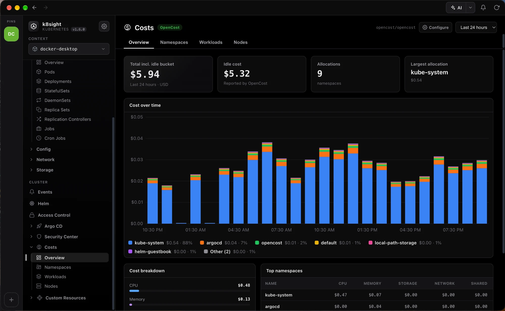
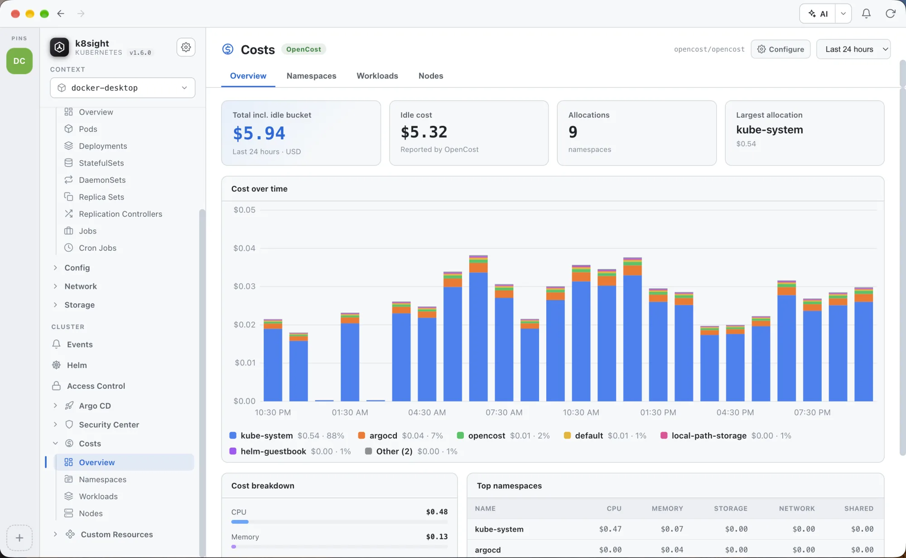

See what every namespace costs
The Costs view reads OpenCost or Kubecost straight from your cluster and turns it into a clear picture of spend: totals and idle cost up top, a stacked cost over time chart broken down by namespace, and a per-resource breakdown underneath. Hover any bar to see exactly who spent what in that hour or day.


See it in under a minute
From the cluster total to a single workload
Cost over time
Hourly or daily stacked bars split by namespace, with the top spenders called out and the long tail grouped as Other. Hover a bar for its exact breakdown.
Totals & idle cost
Allocated spend, the idle capacity you're paying for, how many namespaces are allocated, and which one costs the most, for the last 24 hours, 7 or 30 days, or month to date.
Namespace, workload & node
Switch between namespaces, workloads and nodes to see CPU, memory, storage, network and shared cost for each, sorted by what matters.
Explore the other features
See it on your own cluster
Free and open source for macOS, Windows and Linux. No cluster handy? The built-in demo works with nothing but the app.